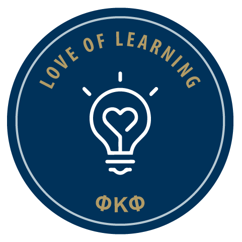
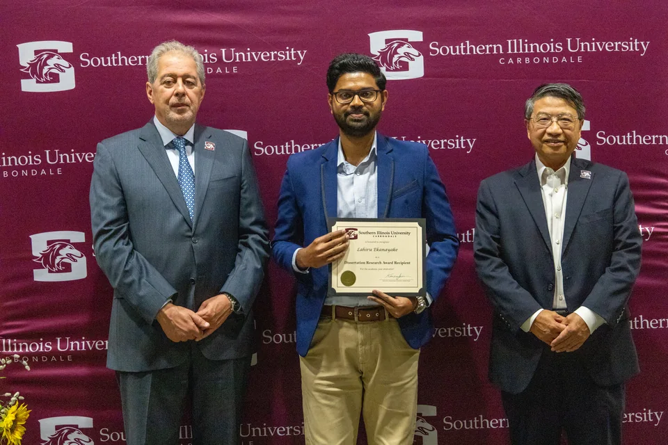
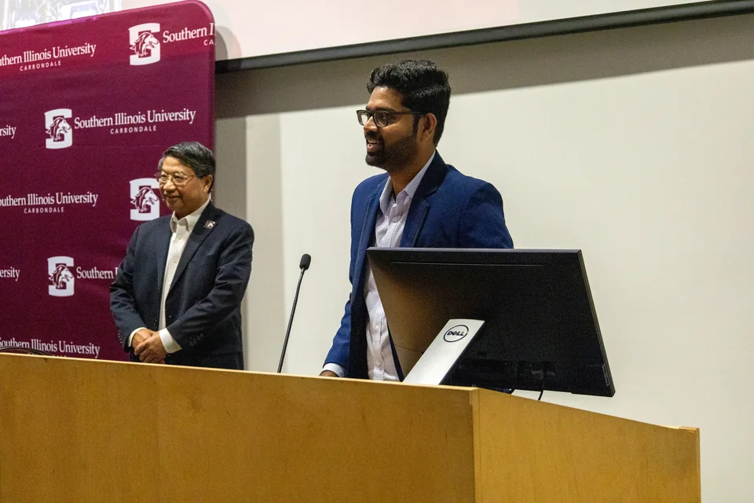
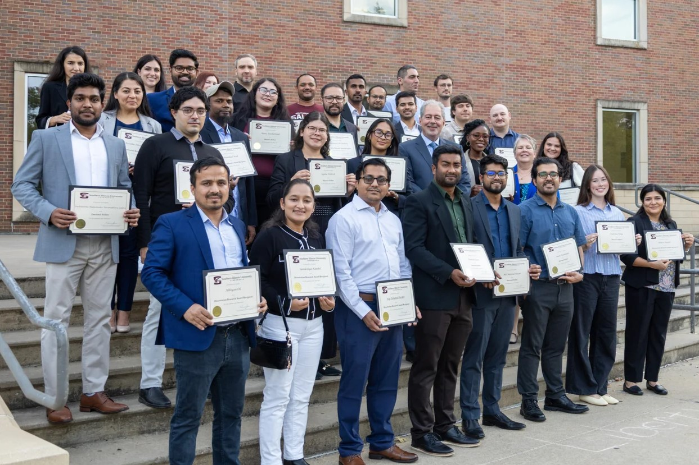
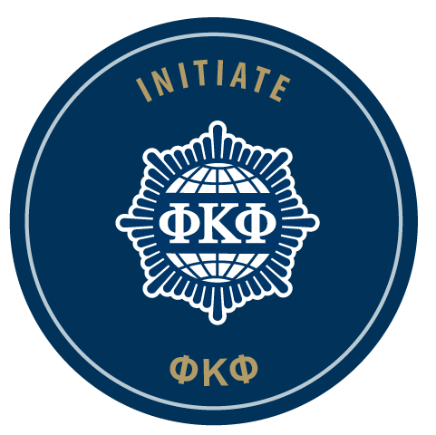
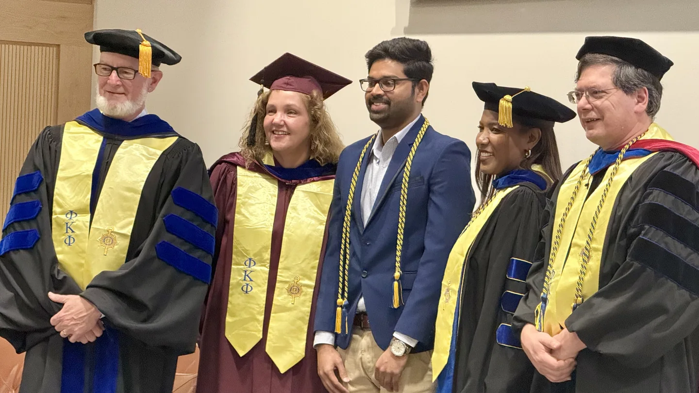
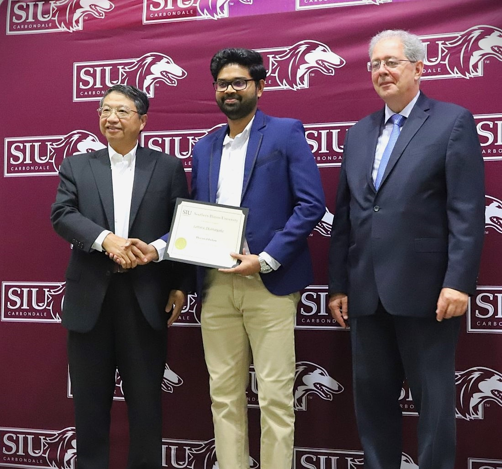
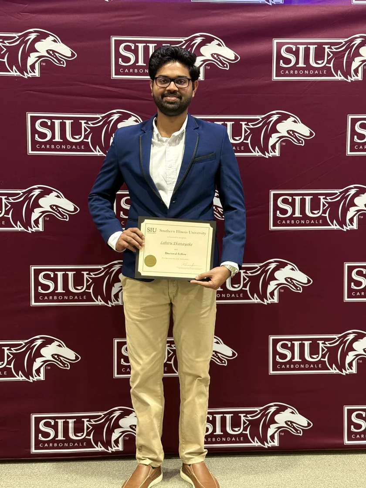
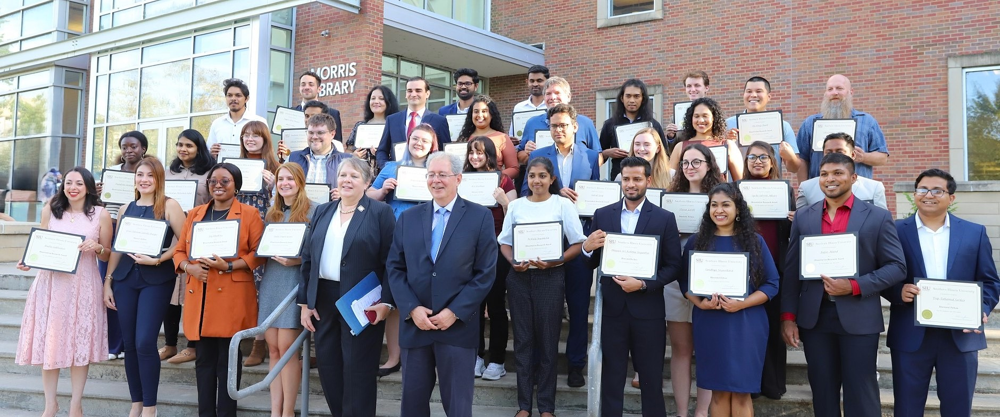

Awards & Honors
Phi Kappa Phi Love of Learning Award

In 2026, I received the Love of Learning Award from The Honor Society of Phi Kappa Phi. The award helps members pursue further education and professional development after earning a bachelor’s degree. This recognition marks a milestone in my doctoral research on control systems and optimization.
Dissertation Research Assistantship
I received the Dissertation Research Assistantship Award from Southern Illinois University in 2026. The award supports doctoral students as they work toward completing their dissertations. It provides tuition coverage and a monthly stipend, and the assistantship duties are tied to the student’s dissertation research.
About SIU’s Dissertation Research Assistantship Award




In April 2026, I was inducted into Chapter 072 of The Honor Society of Phi Kappa Phi at Southern Illinois University Carbondale. Founded in 1897, Phi Kappa Phi is the nation’s oldest multidisciplinary collegiate honor society. Membership is by invitation only, with standard eligibility for graduate and professional students requiring a ranking in the top 10% of their class.
Read the Phi Kappa Phi membership announcement
About Phi Kappa Phi membership and eligibility

Doctoral Research Fellowship
I received the Doctoral Research Fellowship from the Graduate School at Southern Illinois University in 2025. The fellowship recognizes doctoral students who show strong potential for scholarship and professional achievement. It provides tuition coverage, a monthly stipend, and a research assignment aligned with the student’s academic goals.
About SIU’s Doctoral Research Fellowship


